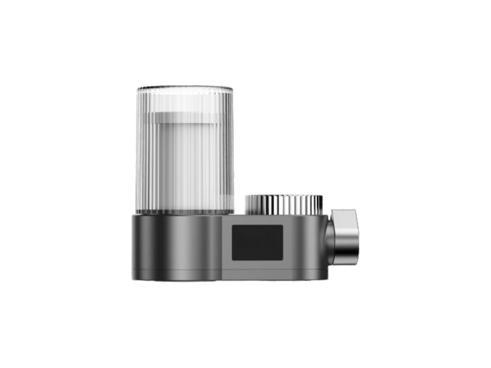

Faucet
FaucetRP-F01
Classic faucet filter
SKU: RP-F01
MOQ: Confirm on enquiry
Home / Products / Faucet Filters / RP-F08

Faucet Filters
Faucet filters (JK-D1) — three options. RP-F08 leads the family.
RP-F08 is a faucet-filter family: three options on the same 1.5–2 L/min, 2–5 µm ceramic platform — the filter-life display model (100% digital display, water-powered blue light); the microbubble model (dual outlets, 1–100 µm microbubbles for skincare and cleaning); and the foam-clean model (four modes, handheld foam sprayer). Specifications are confirmed per model and order.
Display and finish options are confirmed per order.
Voltage / frequency is configurable to the target country. Other configurations are confirmed per order.
Three faucet-filter options — quote as RP-F08 and specify the option (filter-life display, microbubble, or foam-clean). The filter-life display model comes with a dark or transparent cover.
Hover over a variant image to see its specifications. On touch screens, tap an image.



Full specifications for each model, side by side. The specification table further down shows RP-F08's values.
| Specification | RP-F08-1 — filter-life display (JK-D1) | RP-F08-2 — microbubble (JK-H1) | RP-F08-3 — foam-clean (JK-E2) |
|---|---|---|---|
| Type | Intelligent faucet purifier | Skincare microbubble faucet purifier | 2-in-1 foam-clean faucet filter |
| Form | Vertical cartridge on horizontal base | Horizontal bullet body | Wide base, two cartridges + coiled hose + handheld sprayer |
| Display | 100% digital filter-life display | None | 100% display on some variants |
| Outlets | Single filtered outlet | Dual: purified water + microbubble water | Four modes: raw water / pure water / foam / shower |
| Special function | Water-powered blue light; snap-on cover; handle lever | Microbubbles 1–100 µm; cleans and removes pesticide residue | One-touch foam cleaning; handheld foam sprayer |
| Colours | Dark blue, grey, yellow, silver | Champagne gold, silver-blue, purple | Dark, beige, white, silver |
| Rated flow | 1.5-2 L/min | 1.5-2 L/min | 1.5-2 L/min |
| Filtration precision | 2-5 µm (ceramic) | 2-5 µm (ceramic) | 2-5 µm (ceramic) |
| Water temperature | 5-38°C | 5-38°C | 5-38°C |
| Working pressure | 0.1-0.4 MPa | 0.1-0.4 MPa | 0.1-0.4 MPa |
| Water source | Municipal tap water | Municipal tap water | Municipal tap water |
| Cartridge life | 3-6 months | 3-6 months | 3-6 months |
| Dimensions | Confirmed per order | Confirmed per order | Confirmed per order |
Rated flow, filtration precision, water temperature, working pressure, water source and cartridge life are the same across all three models (catalogue values). The models differ in form, display, outlets and special function. The filter-life display model comes with a dark or transparent cover.
7 specification rows from the ROPureOEM catalogue.
| Rated flow | 1.5-2 L/min |
|---|---|
| Filtration precision | 2-5 µm (ceramic) |
| Water temperature | 5-38°C |
| Working pressure | 0.1-0.4 MPa |
| Water source | Municipal tap water |
| Cartridge life | 3-6 months |
| Dimensions | Confirmed per order |
Specifications are taken from the ROPureOEM catalogue. Where a value is not yet confirmed, it is listed as “Confirmed per order” — we do not publish unconfirmed figures.